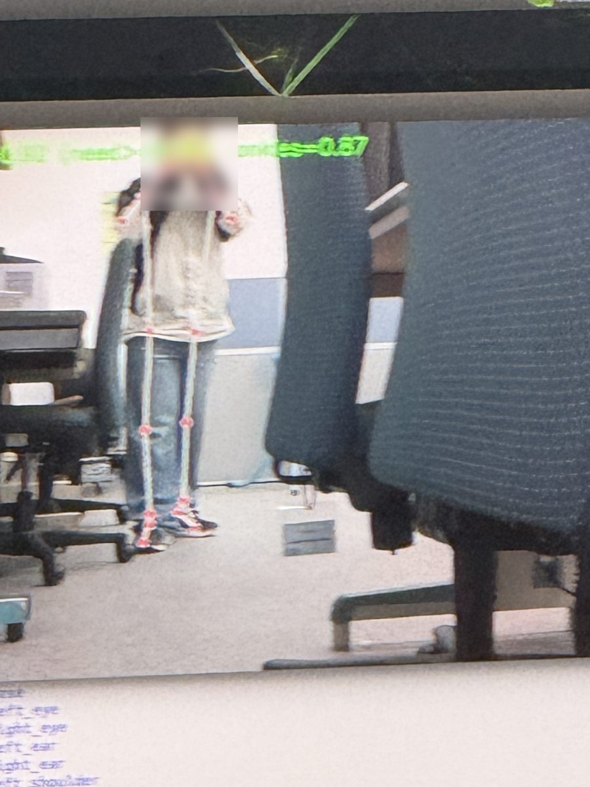
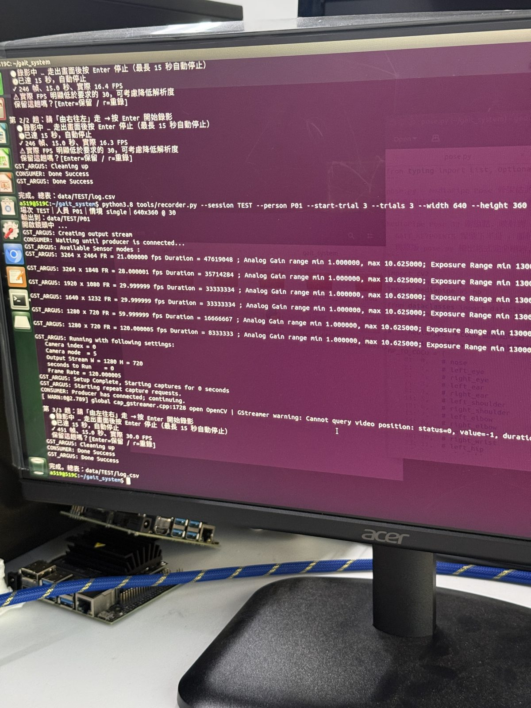
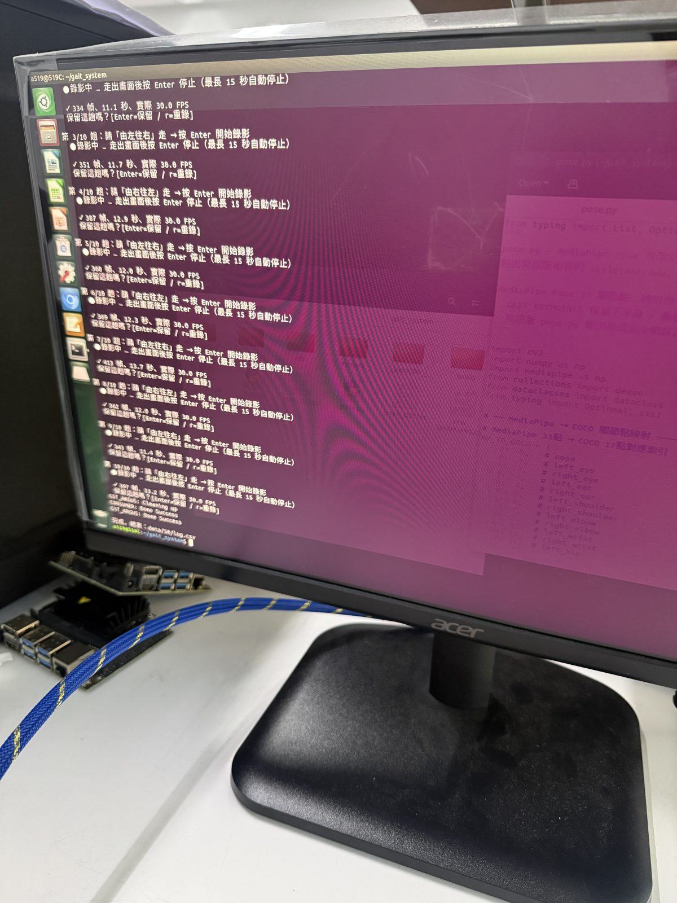
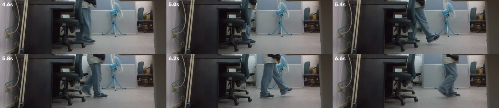

日期：2026 年 11 月 12 日
指導教授：朱學亭老師
目前階段：階段 1～2：環境與資料品質、建立資料集
進度摘要
本次完成尾隨偵測研究所需的第一份正式步態資料集。實測 Jetson Nano 即時執行 MediaPipe Pose 只有約 6～7 FPS，一步僅拍到約 3 張，不足以量測步幅與步態週期，因此改採「先錄原始影片＋每幀時間戳，再離線抽取骨架」。錄影時發現 960×540 受 CPU 壓縮限制只有 16 FPS，改用 640×360 後達到穩定的 30 FPS。鏡頭改為側拍（距行走路線 3.35 m、離地 50 cm），完成場次 S0 共 10 趟（左右各 5 趟）錄影，每趟 30 FPS、掉幀 0 次，影片幀數與時間戳筆數完全一致。
一、基本資訊
| 項目 | 說明 |
|---|
| 實作日期 | 2026 年 11 月 12 日 |
| 硬體 | Jetson Nano + CSI 鏡頭（IMX219），側面拍攝 |
| Python 版本 | Python 3.8（MediaPipe 0.10.9） |
| 使用程式 | tools/measure_fps.py（PR #3）、tools/recorder.py（PR #4）、臨時預覽工具 preview.py |
| 錄影設定 | 640 × 360 @ 30 FPS，MJPG（.avi）＋每幀時間戳（.csv） |
| 本次產出 | 場次 S0、受試者 P01，共 10 趟（約 95 MB，資料屬個資，不上傳 Git） |
二、今日流程總覽
- 同步程式：確認 PR #4（recorder.py）已合併，MacBook 與 Jetson 皆 git pull 到最新 main。
- 量測 FPS：分別量「只有鏡頭」與「鏡頭＋MediaPipe」兩種情況。
- 排查偵測率 0%：撰寫即時預覽工具，找出原因並重新架設鏡頭。
- 試錄與解析度取捨：960×540 只有 16 FPS，改用 640×360 達 30 FPS。
- 正式錄製 S0／P01 共 10 趟，傳回 MacBook 檢查幀數、時間戳與構圖。
- 記錄架設參數，供 11/16 錄製其他受試者時重現。
三、FPS 實測
使用 tools/measure_fps.py，A 階段只讀鏡頭，B 階段模擬主程式（讀畫面 → MediaPipe），各量 10 秒：
python3.8 tools/measure_fps.py
[A] 鏡頭：要求 60 FPS，實際 60.0 FPS（讀取失敗 0 次）
[B] 鏡頭+MediaPipe：實際 6.1 FPS（共 61 幀）
MediaPipe 每幀：平均 164 ms（中位數 158 / 最快 119 / 最慢 308）
python3.8 tools/measure_fps.py --width 960 --height 540 --fps 30
[A] 鏡頭：要求 30 FPS，實際 30.0 FPS（讀取失敗 0 次）
[B] 鏡頭+MediaPipe：實際 6.9 FPS（共 70 幀）
MediaPipe 每幀：平均 143 ms
| 情況 | 實測 FPS | 說明 |
|---|
| 只開鏡頭（1280×720，要求 60） | 60.0 | 鏡頭本身沒有瓶頸 |
| 只開鏡頭（960×540，要求 30） | 30.0 | 錄影解析度下鏡頭穩定 |
| 鏡頭＋MediaPipe 即時推論 | 6.1～6.9 | 每幀 143～164 ms，瓶頸在骨架推論 |
▲ 各情況實測 FPS（虛線為目標 30 FPS；滑鼠移到長條上可看說明）
結論：一步約 0.5 秒，6 FPS 下一步只有約 3 張畫面，無法精確量測步幅與步態週期。因此錄影時不跑 MediaPipe，只存原始影片與時間戳，之後離線抽骨架；同一份影片也能重複用於單人辨識與多人（尾隨）姿態模型。
四、偵測率 0% 排查與鏡頭重新架設
第二次量測時「有偵測到人的幀」為 0%（0/70），且每幀推論時間非常平均（140～152 ms），代表 MediaPipe 整段都沒有找到人。為了看見原因，撰寫即時預覽工具：在 Jetson 螢幕上顯示鏡頭畫面、MediaPipe 骨架，以及左上角的偵測狀態。
| 預覽顯示 | 意義 |
|---|
| PERSON: NO | MediaPipe 沒找到人 |
| PERSON: YES，legs vis < 0.50 | 找到人但腿部可信度不足，會被 pose.py 門檻濾掉 |
| PERSON: YES，legs vis ≥ 0.50 | 正常，計入偵測率 |
4.1 找到的原因
- 太靠近鏡頭、頭部出畫面：程式的「下半身模式」只是輸出時只保留下半身點，MediaPipe 找人時仍依賴臉與上半身，只拍到腰部以下就完全偵測不到。
- 椅子遮擋：鏡頭右前方的椅背擋住畫面右側約 45%。
- 行走方向錯誤：原本是朝鏡頭走（正拍），步幅、腿擺動都是前後方向，畫面上幾乎看不出來；步態特徵需要側拍（人從畫面左走到右）。
4.2 調整後
結果：移開遮擋的椅子、受試者距鏡頭 2～3 m 以上並側身橫走後，畫面大部分時間為綠色，腳踝可信度（ankles）約 0.79～0.84，遠高於先前記錄的 0.2～0.4；左右方向各可拍到約 3 步。

▲ 即時預覽工具畫面：左上角綠字代表偵測成功，紅點與連線為 MediaPipe 骨架（調整中途拍攝，右側仍有椅背遮擋；頭部已模糊處理）
五、錄影解析度取捨：960×540 → 640×360
以 recorder.py 試錄（場次 TEST），發現預設 960×540 達不到 30 FPS：
python3.8 tools/recorder.py --session TEST --person P01 --trials 2
✓ 246 幀、15.0 秒、實際 16.4 FPS
⚠ 實際 FPS 明顯低於要求的 30，可考慮降低解析度
python3.8 tools/recorder.py --session TEST --person P01 --start-trial 3 --trials 3 --width 640 --height 360
✓ 451 幀、15.0 秒、實際 30.0 FPS
| 解析度 | 15 秒幀數 | 每幀間隔 | 實際 FPS |
|---|
| 960 × 540 | 246 | 約 61 ms | 16.4 |
| 640 × 360 | 451 | 33.3 ms | 30.0 |

▲ Jetson 終端機：上方兩趟 960×540 只有 16.4／16.3 FPS 並出現警告；最下方 640×360 達 30.0 FPS
原因與取捨：只開鏡頭可達 30 FPS，瓶頸在每幀以 CPU 壓縮成 MJPG（960×540 約 60 ms／幀）。640×360 像素只有原本的 44%，即可達 30 FPS。由於 MediaPipe 推論前會將畫面縮至 256×256，人在 640×360 畫面中仍約有 250～300 像素高，降低解析度不影響骨架品質，卻讓時間解析度提升近一倍（一步由約 8 張增加到約 15 張）。
六、正式錄製：場次 S0／受試者 P01
python3.8 tools/recorder.py --session S0 --person P01 --width 640 --height 360
單數趟由左往右（LR）、雙數趟由右往左（RL），左右各 5 趟。傳回 MacBook 後逐趟檢查：
| 趟次 | 方向 | 幀數 | 秒數 | FPS | 每幀間隔（最小～最大） | 掉幀 |
|---|
| 1 | LR | 440 | 14.6 | 30.0 | 31.8～34.8 ms | 0 |
| 2 | RL | 334 | 11.1 | 30.0 | 30.2～36.8 ms | 0 |
| 3 | LR | 351 | 11.7 | 30.0 | 27.8～36.2 ms | 0 |
| 4 | RL | 387 | 12.9 | 30.0 | 30.7～35.7 ms | 0 |
| 5 | LR | 360 | 12.0 | 30.0 | 29.9～36.5 ms | 0 |
| 6 | RL | 369 | 12.3 | 30.0 | 28.9～41.8 ms | 0 |
| 7 | LR | 413 | 13.7 | 30.0 | 32.2～34.6 ms | 0 |
| 8 | RL | 362 | 12.0 | 30.0 | 27.2～45.2 ms | 0 |
| 9 | LR | 343 | 11.4 | 30.0 | 30.3～36.2 ms | 0 |
| 10 | RL | 397 | 13.2 | 30.0 | 29.1～38.0 ms | 0 |
結果：10 趟皆 30 FPS，平均每幀間隔 33.3 ms，掉幀（間隔 > 50 ms）0 次；每支影片幀數與時間戳 CSV 筆數完全一致。過去「資料沒有時間戳與人員標籤、無法離線評估」的問題已解決，每趟都有 frame_idx, t_mono, t_wall 與 log.csv 標籤（場次、人員、方向、幀數、實際 FPS）。

▲ S0 正式錄製終端機輸出：每趟皆為實際 30.0 FPS，無警告

▲ S0 第 5 趟（由左往右）側拍連續畫面，每 0.4 秒一張：可清楚看到雙腿交替跨步（僅保留腰部以下）
七、架設參數（供 11/16 重現）
| 項目 | 數值 |
|---|
| 拍攝方式 | 側拍，鏡頭與行走路線垂直 |
| 鏡頭離地高度 | 50 cm（平放於辦公椅座墊） |
| 鏡頭到行走路線 | 3.35 m |
| 行走距離 | 1.61 m |
| 每趟可見步數 | 左右方向各約 3 步 |
| 對位方法 | 椅輪貼膠帶定位；以預覽畫面對照背景隔板、電風扇、海報位置 |
八、已知問題與限制
- 每趟頭尾有非側面畫面：受試者走回起點時會經過鏡頭前方或朝鏡頭走，離線處理時需自動擷取「側面、全身入鏡」的片段。
- 行走範圍較短：受實驗室走道寬度限制，每趟約 3 步（約 1.5 個步態週期）；若 11/16 前能找到更寬的場地，資料品質會更好。
- 頭頂接近畫面上緣：較高的受試者頭頂可能被切到；步態只用髖、膝、踝，影響不大，必要時鏡頭可再後退。
- 目前只有 1 位受試者、1 個場次：今天的資料先用於「同一人一致性」驗證，跨人比較需等 11/16 錄製其他受試者。
⚠️ 注意：即時預覽工具目前放在 Jetson 的 /tmp，重開機會被清除；recorder.py 預設解析度仍為 960×540，錄影時需加上 --width 640 --height 360。兩者將在下一個 PR 修正。
九、後續規劃
- 11/13：撰寫「影片轉骨架」離線程式（自動擷取側面片段）與 evaluate.py（Rank-1、FAR、FRR、EER）。
- 11/14：導入公式（行走方向統一、z-score 正規化＋歐氏距離），以 S0 資料做同一人一致性驗證。
- 11/15：尾隨偵測離線程式（多人姿態模型＋時間差／間距規則）。
- 11/16：錄製其他受試者（≥3 人）與兩人緊跟的尾隨片段。
- 將預覽工具正式加入 tools/，並把 recorder.py 預設解析度改為 640×360。